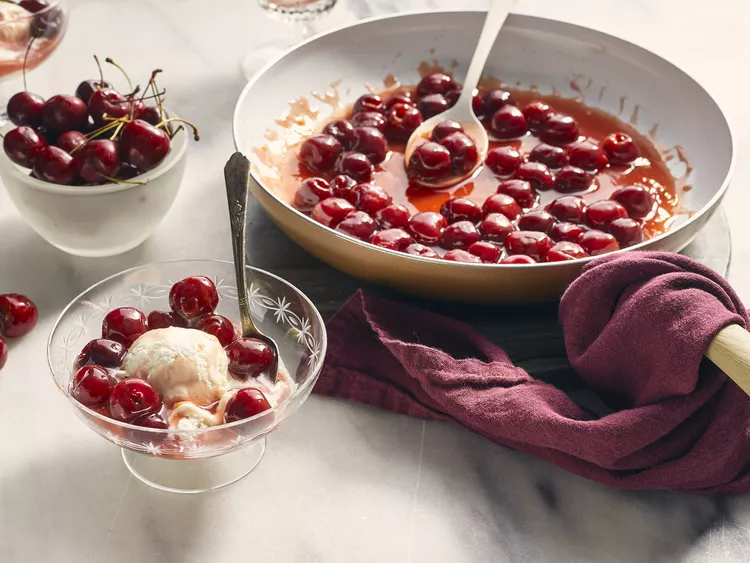

Classic Cherries Jubilee

Ingredients
- 1/2 cup white sugar
- 2 tablespoons cornstarch
- 1/4 cup cold water
- 1/4 cup orange juice
-
1 pound Bing or other dark,sweet cherries,
rinsed and pitted (or use frozen pitted cherries)
- 1/2 teaspoon finely grated orange zest
- 3 cups vanilla bean ice cream
- 1/4 teaspoon cherry extract
- 1/4 cup brandy
Steps
- Whisk sugar and cornstarch together in a wide saucepan
-
Stir in water and orange juice;
bring to a boil over medium-high heat,
whisking until thickened
-
-
Stir in cherries and orange zest;
return to a boil, then reduce heat, and simmer for 10 minutes
- While cherries are cooking, spoon ice cream into serving bowls
- Remove cherries from heat and stir in cherry extract
- Pour in brandy and ignite with a long lighter
- Gently shake the pan until blue flame has extinguished itself
- Spoon cherries over ice cream